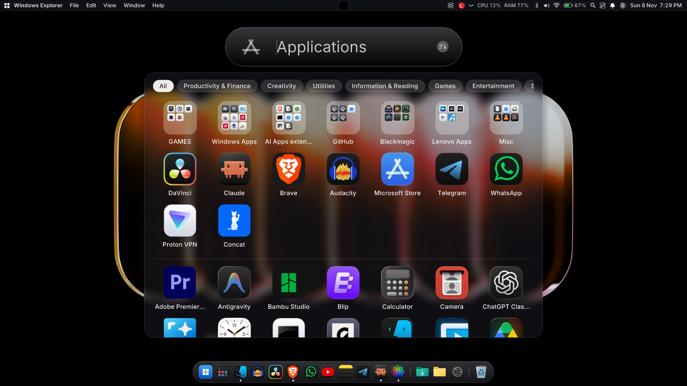

The Mac dock, on Windows 11.
A macOS-style dock and menu bar for your desktop. Runs without admin rights or an SDK.
Windows 11 (Windows 10 mostly works) · x64 · .NET Framework 4.x

The Mac dock, on Windows 11. A dock and menu bar for your desktop.

Icons grow as you move across them. Magnifying dock.

All your apps in one full-screen grid. Launchpad.

Quick settings from the menu bar. Control Center.

Light and dark icons, start at login, and more. Settings.